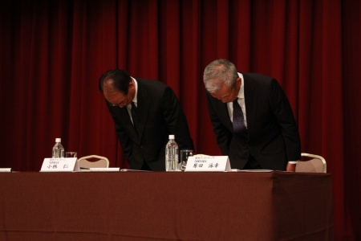

SNSサービス「ROW」情報漏洩、経営陣謝罪

株式会社源信会ホールディングスは9日、760万件の顧客情報が漏洩したと発表した。最大で2000万件に達する可能性がある。通信教育「X会」を含むサービスが対象。漏れたのは子供や保護者の住所や氏名、電話番号、子供の性別や生年月日など。
情報漏洩に至った原因として、サーバーの脆弱性をついた不正アクセスと発表された。しかし、世に知れ渡った既知の脆弱性であり、それを同社が認識していなかったことが問題の根幹にあるとされている。なお関連性は定かではないものの、世界的に有名なハッカー集団からさまざまな攻撃を受けていたという情報も出回っている。
また、同社は会見において謝罪をするとともに、漏洩の被害者には「お詫びとご報告のお手紙」とともに、補償として300円の金券を送ることも明らかとなった。さらに、新たに子供たちへの支援を行う「こども基金」を設立し、300円の補償を受け取る代わりにこちらへの寄付を選択できる形にするという。